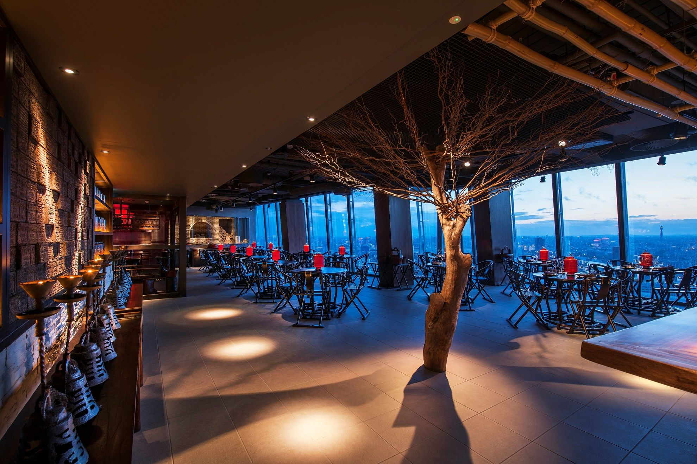

MADSAGASCAR
Ristoranti sul territorio
La catena La Semizza SA, conta 20 ristoranti sul territorio del madagascar
Tipologia di Ristoranti
I ristoranti presenti sono molto semplici e tipici della zona. Oltre a offrire le nostre pizze, offriamo anche una cucina tipica della zona e molto rinomata
Una buona parte sono stati premiati con una stella michelin
Struttura e localizzazione
I nostri ristoranti si trovano, per la maggior parte, nella capitale Antananarivo ed hanno una struttura moderna ed avanzata